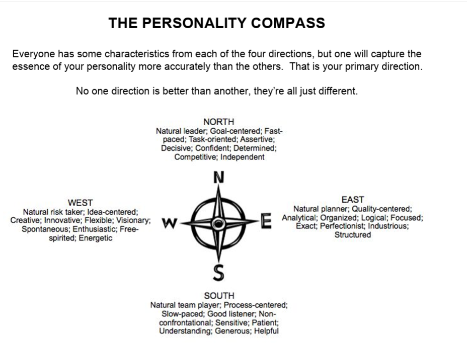

Studio Kairos · Internship · Day 3
Lead people well. Ship projects on time.
⏱ 15 min Take the test:
personalitycompassandtests.pdf
Answer honestly — you'll use your results to understand how you lead and work with others.

↓ go deeper
Prioritize the growth, well-being, and success of your team above your own personal ambitions.
The best leaders serve first.
Understand what your team members are feeling and experiencing — not just what they're saying.
Listen to understand, not just to respond.
Win people over with reasons and vision, not authority or pressure.
People work harder for leaders they believe in.
Tell the truth — even when it's hard. People would rather hear a difficult truth than a comfortable lie.
Trust is built on honesty.
Invest in making your team better. A leader who grows their people builds a team that outlasts them.
Make the people around you look good. Celebrate their wins publicly and loudly.
Trust your team with real responsibility. Delegation is not a sign of weakness — it's a sign of good judgment.
You can't do everything yourself.
Definition: the discipline of planning, executing, and overseeing tasks to achieve specific business goals within a defined scope, timeline, and budget.
Every project has a start, a finish, and a goal.
↓ break it down
Define the project's purpose.
Secure stakeholder buy-in and establish a business case.
Answer: Why are we doing this?
Build the roadmap.
Outline the budget, scope, deliverables, and resource requirements.
Answer: How are we going to do this?
Assign tasks and build the deliverables.
Keep the team on track and moving forward.
Answer: Who does what, and when?
Track performance using KPIs.
Ensure the project stays within its time and cost constraints.
Answer: Are we on track?
Finalize deliverables and evaluate success.
Release resources and document lessons learned.
Answer: Did we do what we set out to do?
An Agile framework where teams divide large, complex projects into short, focused development cycles called sprints.
Usually lasting 1–4 weeks (average: 2 weeks), sprints allow teams to adapt quickly, test ideas, and deliver usable results iteratively — not all at once.
↓ step by step
The team and product owner set the sprint goal and pull high-priority tasks from the product backlog.
The development team works on selected tasks for the duration of the sprint.
A brief 15-minute daily meeting where the team aligns on three things:
A demonstration of completed work to stakeholders to gather feedback and adjust the backlog.
The team reflects on the sprint process itself.
Keep doing these things.
Change these next sprint.
Product Requirements Document
A foundational guide that outlines a product's purpose, features, functionality, and behavior. Created before development begins.
It acts as a single source of truth to align designers, engineers, and stakeholders on what is being built and why.
Standard Operating Procedure
A set of step-by-step instructions that help workers carry out routine operations consistently.
Goal: achieve efficiency, quality output, and uniformity while reducing miscommunication and human error.
Trello is a visual project management tool built around the Kanban methodology.
Tasks not yet started — pulled from the backlog.
Work actively being done right now.
Completed and reviewed work.
Cards move left → right as work progresses.
Over to Henry.
Listen actively — you may have questions at the end.